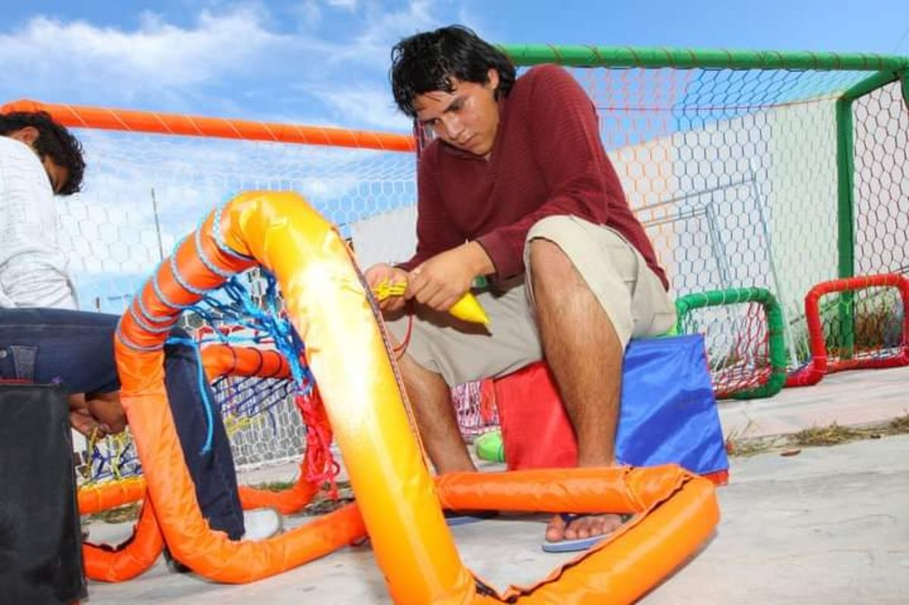
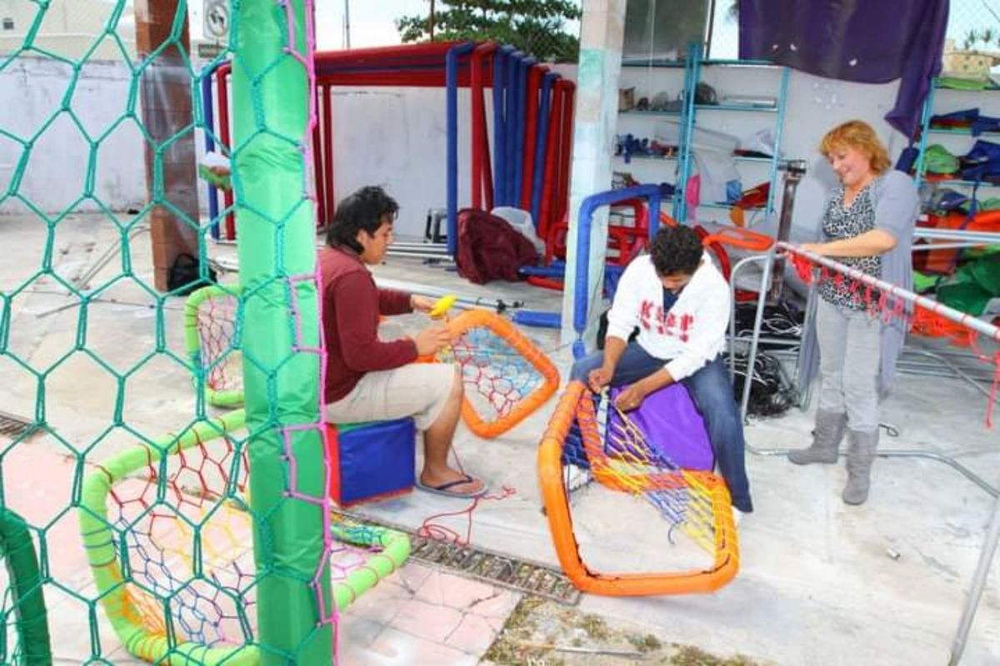
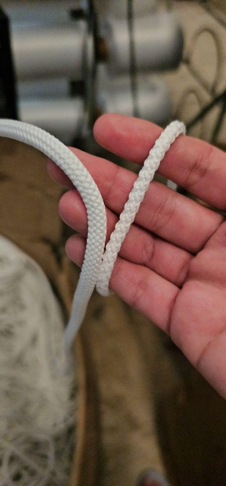
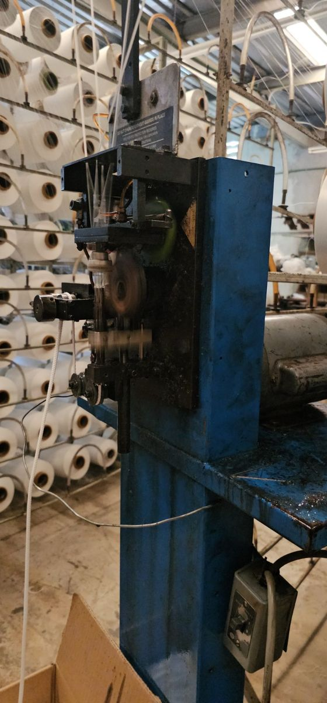
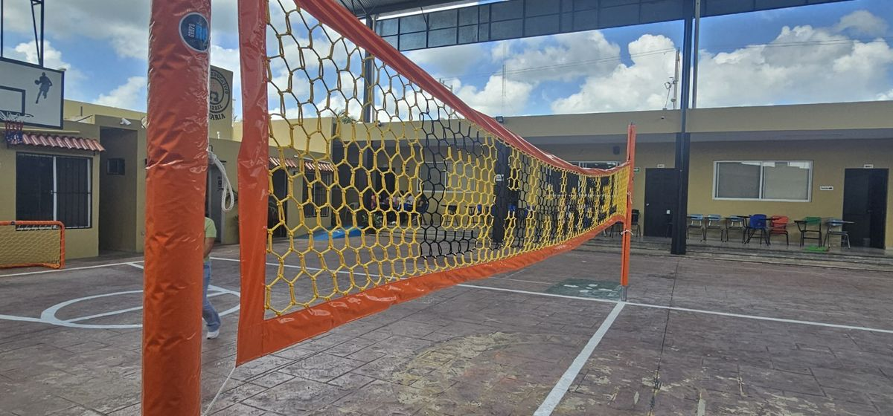
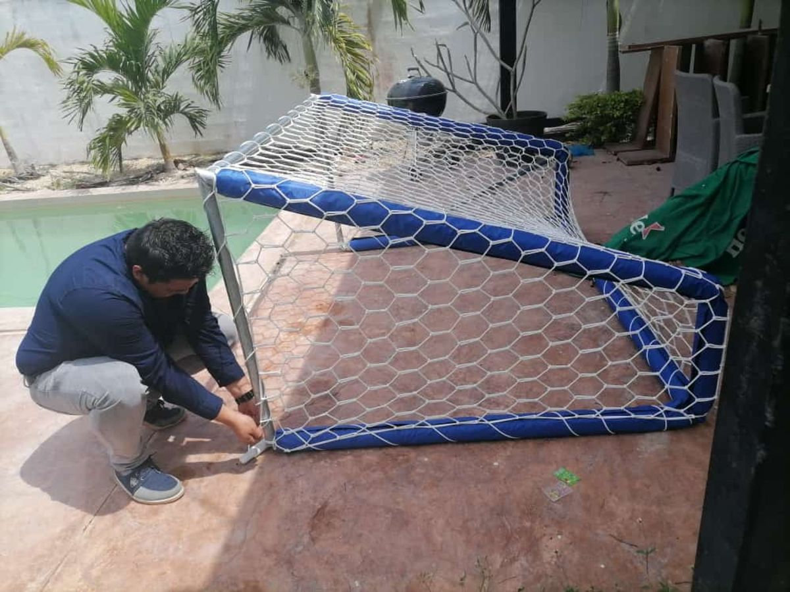
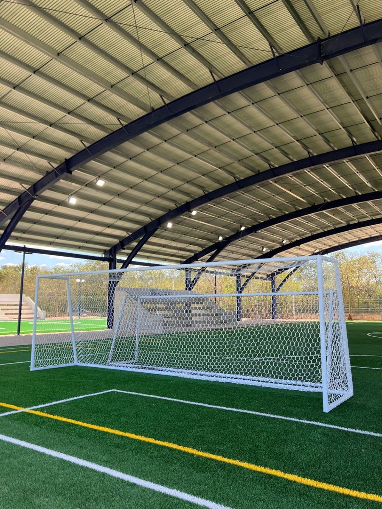

En Yucatán, hablar de tejido artesanal suele llevarnos a las hamacas. En mi familia, esa creatividad tomó otro camino: las redes deportivas.
Nuestra historia reúne trabajo a mano, conocimientos compartidos por pescadores de Progreso y una inspiración que llegó con el Mundial de Francia 98. Con los años, fuimos desarrollando una técnica propia para confeccionar redes a la medida, combinar colores y darles una presentación que se reconoce dentro de la cancha.
Yo también crecí participando en la confección de estas redes. Aprendí trabajando con mis manos, ajustando nudos y cuidando la forma de cada pieza; hoy comparto ese conocimiento al capacitar a nuestras tejedoras.
Quiero compartir ese origen porque detrás de cada red hay mucho más que un cordón: hay aprendizaje, práctica y una tradición familiar que seguimos transmitiendo.
Todo comenzó con una portería pequeña
Durante el Mundial de Francia 98, mis hermanos se fijaron en un detalle: las redes de las porterías tenían un tejido hexagonal.
Inspirados por el fútbol, decidieron encontrar la manera de reproducir esa forma mediante un tejido hecho a mano. La primera red para una portería pequeña les tomó casi una semana.
Había que resolver cómo formar los hexágonos, mantener las medidas y conseguir que los nudos quedaran firmes. Cada intento ayudaba a entender mejor el siguiente.
Cuando terminaron aquella primera pieza, ya tenían algo más valioso que una red: una manera de enseñar el proceso a otros integrantes de la familia. Así comenzó un aprendizaje que después fuimos perfeccionando.
Lo que aprendimos de los pescadores de Progreso
Una parte importante de esa búsqueda fue acercarse a pescadores progreseños y preguntarles sobre los nudos que utilizaban.
Mis hermanos necesitaban nudos que pudieran maniobrarse durante la elaboración para ajustar las medidas y que, una vez asentados, permanecieran firmes sin correrse.
Ese conocimiento nos ayudó a desarrollar nuestra forma de trabajar. Después vino la práctica: repetir el tejido, corregir proporciones y aprender a confeccionar piezas de diferentes tamaños.
Por eso considero que nuestras redes tienen una raíz profundamente yucateca. Su historia está ligada a nuestra familia y al conocimiento de personas que han trabajado con cordones y redes durante generaciones.

Qué es el tejido hexagonal o tipo colmena
Nosotros lo llamamos tejido tipo colmena por la forma de sus mallas hexagonales.
Estas redes de juego son distintas de las redes perimetrales romboidales. Las perimetrales se utilizan para delimitar espacios y contener balones alrededor de una cancha (si te interesan, explico sus diferencias de abertura); aquí hablo de las piezas que confeccionamos para porterías y otras aplicaciones deportivas.
Nuestro tejido se realiza a mano, formando y ajustando los nudos hasta dar a la pieza las dimensiones previstas.
El trabajo artesanal permite adaptar medidas, desarrollar combinaciones de colores y atender proyectos que necesitan una confección particular. Para nosotros, hacer una red a la medida significa cuidar tanto su tamaño como la forma y uniformidad del tejido.
La red también viste la cancha
Siempre he pensado que una red debe cumplir su función y aportar una buena presentación.
En una portería, la red forma parte de lo que ven los jugadores y los espectadores. Su tejido, sus colores y la manera en que queda colocada influyen en la apariencia del conjunto.
Después de dominar las primeras piezas, comenzamos a incorporar colores diferentes. Esa posibilidad abrió el camino a nuevas combinaciones y diseños.
La presentación se construye con detalles: un tejido uniforme, medidas bien resueltas y una confección que conserve la forma prevista al instalarse. Porque la calidad es importante, pero la presentación también se nota.
Cómo fuimos mejorando el material
Con el tiempo probamos distintos cordones y materiales. Buscábamos mantener una apariencia atractiva y mejorar el desempeño de nuestras piezas a la intemperie.
En nuestra experiencia con los materiales que utilizamos, las opciones de polipropileno y polietileno no nos dieron el mismo resultado que el poliéster para estas redes. Ese aprendizaje nos llevó a elegirlo para nuestra confección actual.
No significa que todos los productos de un material sean iguales: también influyen la construcción del cordón, su calidad y las condiciones de uso. Nuestra elección responde a lo que hemos observado en las piezas que elaboramos.
Inicialmente trabajábamos con un cordón de 40 filamentos. Después incorporamos cordón trenzado de 60 filamentos, con composición 100% poliéster, buscando mejorar la durabilidad sin perder la presentación del tejido.
La cantidad de filamentos es parte de la descripción del cordón; el desempeño final depende del conjunto del material, la confección y el uso.

De las porterías a nuevas aplicaciones
La experiencia familiar nos permitió llevar el tejido a otros productos. Lo hemos adaptado a redes de básquetbol y voleibol, proyectos para albercas, y bolsas y costales baloneros. Cada aplicación requiere resolver sus propias medidas y forma de colocación.
Una de las posibilidades que desarrollamos fue incorporar letras mediante el tejido y la combinación de colores. Cada letra se construye mientras tejemos: elegimos dónde cambia el color del cordón para que el diseño forme parte de la propia red. Así podemos crear piezas personalizadas.
Según nuestra experiencia familiar, estas redes han sido utilizadas durante años en proyectos para hoteles de la zona hotelera de Cancún, incluidas instalaciones en piscinas.
Dentro de esa trayectoria familiar también se han confeccionado piezas utilizadas por equipos de Primera División y en partidos de la selección mexicana. Son experiencias que forman parte de nuestra historia y que nos motivan a seguir cuidando los detalles de cada trabajo.

Cuánto duran nuestras redes artesanales
Según nuestra experiencia, estas redes pueden ofrecer una duración aproximada de tres años a la intemperie, aunque el tiempo real cambia según la exposición, la frecuencia de uso y el cuidado.
En clubes que reservan las piezas para eventos especiales y las guardan adecuadamente entre usos, hemos observado una duración mayor.
El roce con superficies cortantes, las fijaciones inadecuadas o el uso para una función distinta de la prevista pueden deteriorarlas antes. Por eso, además de elegir el material, conviene revisar cómo se colocarán y qué mantenimiento recibirán. Si estás comparando opciones, te puede servir errores frecuentes al comprar redes deportivas.

Un conocimiento que seguimos transmitiendo
Hoy sigo capacitando a nuestras tejedoras para elaborar diferentes productos y resolver nuevas necesidades.
Enseñar implica mostrar cómo hacer un nudo, pero también cómo mantener las medidas, corregir el tejido y cuidar la presentación de la pieza terminada.
Cada producto nuevo aprovecha ese conocimiento acumulado. A veces se trata de una portería; otras, de una bolsa balonera o una red confeccionada para el contorno de una piscina, según su función específica.
El trabajo artesanal sigue siendo parte de nuestra identidad. Nos permite conservar lo que aprendimos en familia y seguir desarrollando nuevas soluciones.

Una historia yucateca que continúa en cada red
Cuando veo una de nuestras redes instalada, recuerdo aquella primera portería pequeña que tomó casi una semana de trabajo.
Desde entonces hemos mejorado materiales, desarrollado diseños y enseñado la técnica a nuevas manos. El origen sigue presente: creatividad, paciencia y orgullo por un trabajo bien hecho.
En Redes Deportivas RC confeccionamos redes deportivas artesanales a la medida. Si buscas una pieza con medidas, colores o diseño particular, comparte tu idea con nosotros para revisar cómo podemos elaborarla.
